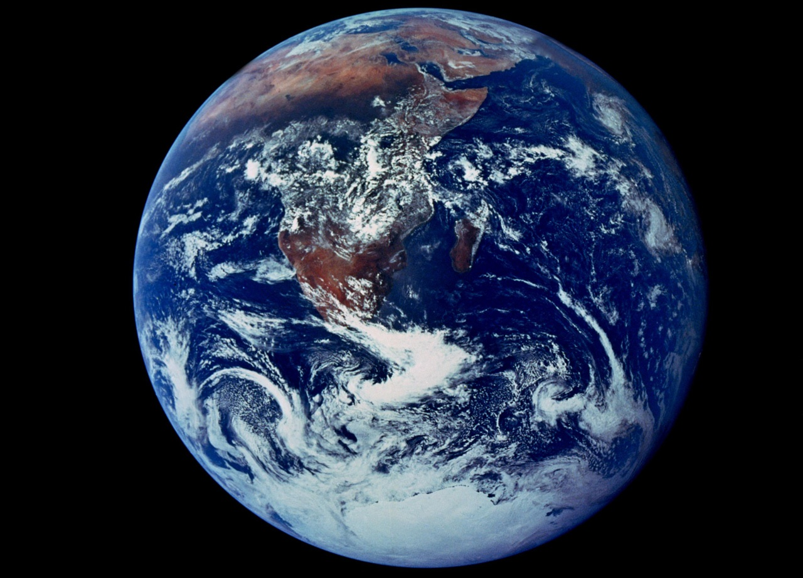

We studied the impact of climate change on coral reefs in the Chagos
Archipelago as part of the Bertarelli Program in Marine Science. To monitor coral reef health,
we needed to collect water samples above the reef every two hours for days at a time.
Rather than stay up all night on rafts, we obtained a grant to design and build a
submersible autonomous water sampler. I collaborated with our research engineer on the
hardware components and programmed the microcontroller.
Publication
Code
Measurements of net community production and net community calcification
are used as important indicators of coral reef health. A novel approach is
to measure pH and oxygen concentrations at two depths above the reef. To ensure
that these measurements are extremely precise, we use a single pH and oxygen sensor.
We designed and built an autonomous submersible pumping system that alternately pumps
water from each depth for a specified amount of time through the pH and oxygen sensor.
I collaborated with our research engineer on the hardware components and
programmed the microcontroller.
Publication
Code
I designed an inquiry-based classroom resource where students build their own evolutionary
trees using Crustal Omega, a professional sequence alignment software. After scouring the
scientific literature, I found a dataset from the publication “A Molecular Phylogeny of
Living Primates” (Perelman et al., 2011) that includes the genetic sequences of 58 genes
from 168 primate species. Rather than having students manually search for each gene sequence
in the National Center for Biotechnology Information (NCBI) database, I am building a web
tool where students can quickly and easily find formatted gene sequences for primate species
of their choice. I addition, I plan to build an interactive primate explorer with interactive
maps of the geographical ranges of each species. In the future I hope to expand this web
tool to include gene sequences from carnivores (Flynn et al., 2005) and whales
(based on transposons, Nikaido et al., 1999).

I conceptualized and created a virtual classroom resource where students explore peer-reviewed
datasets to deepen their understanding of the global carbon cycle on timescales ranging from days
(coral reef metabolism) to years (atmospheric and oceanic CO2 cycles) to hundreds of thousands
of years (CO2 trapped in ice cores). I built these interactive data visualizations using dygraphs,
D3, and leaflet.